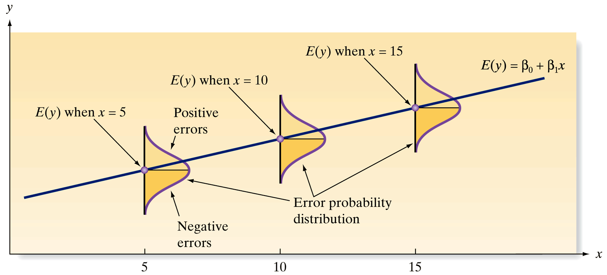
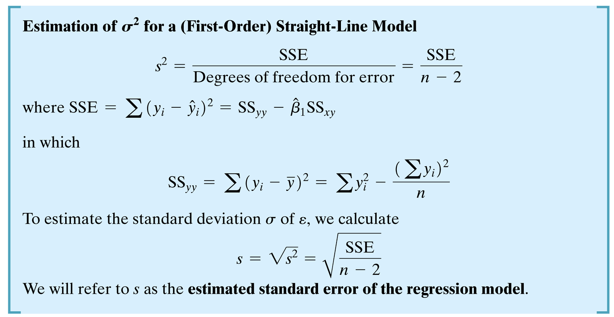
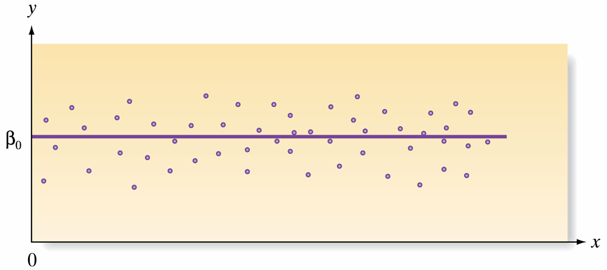
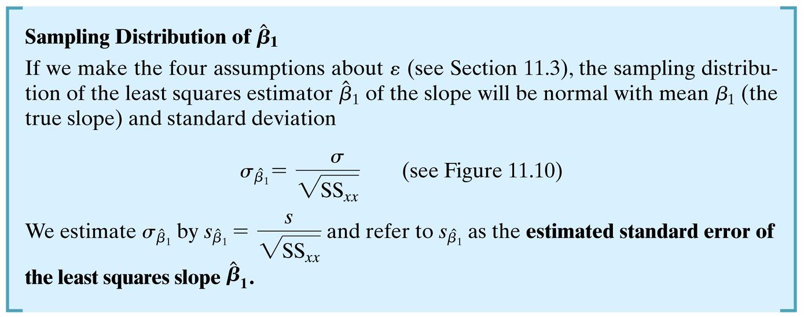
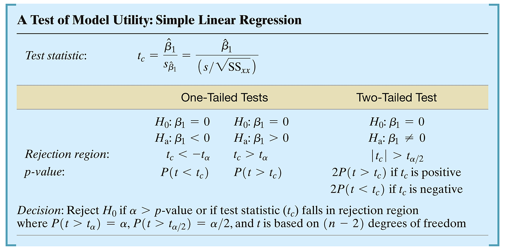
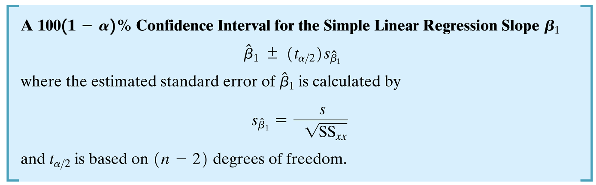

Mean of Errors (\(\varepsilon\)): The mean of the probability distribution of \(\varepsilon\) is 0, aligning the expected value of \(y\) with \(\beta_0 + \beta_1 x\) for any \(x\).
Constant Variance: The variance of \(\varepsilon\) is constant across all values of \(x\), denoted as \(\sigma^2\).
Normal Distribution of Errors: \(\varepsilon\) follows a normal distribution.
Independence of Errors: The errors associated with different \(y\) values are independent.
Constant Variance


# Define the datax <-c(1, 2, 3, 4, 5)y <-c(1, 1, 2, 2, 4)# Create a dataframedata <-data.frame(x, y)# Fit a linear modelmod <-lm(y ~ x, data = data)summary(mod)
Call:
lm(formula = y ~ x, data = data)
Residuals:
1 2 3 4 5
4.000e-01 -3.000e-01 -3.886e-16 -7.000e-01 6.000e-01
Coefficients:
Estimate Std. Error t value Pr(>|t|)
(Intercept) -0.1000 0.6351 -0.157 0.8849
x 0.7000 0.1915 3.656 0.0354 *
---
Signif. codes: 0 '***' 0.001 '**' 0.01 '*' 0.05 '.' 0.1 ' ' 1
Residual standard error: 0.6055 on 3 degrees of freedom
Multiple R-squared: 0.8167, Adjusted R-squared: 0.7556
F-statistic: 13.36 on 1 and 3 DF, p-value: 0.03535
Interpretation of \(s\), the Estimated Std. Dev. of \(\varepsilon\)
Definition: \(s\) measures typical error from predicted values in regression.
Calculation: Computed as root mean squared error of residuals.
95% Confidence Interval
Expectation: About 95% of observed \(y\) values fall within \(2s\) of \(\hat{y}\).
Precision: “2” is an estimate; use \(t\)-quantile for exact interval.
Note on \(t\)-Quantile
Function: qt()
Usage: For precise intervals, use qt(0.975, df = n-2) for the \(t\)-value instead of 2.
Making Inferences About the Slope \(\beta_1\)
Objective: Assess the significance of the slope \(\beta_1\) to understand the contribution of \(x\) in predicting \(y\).
Statistical Test:
Null Hypothesis (\(H_0\)): \(\beta_1 = 0\) (No relationship)
Alternative Hypothesis (\(H_a\)): \(\beta_1 \neq 0\) (Significant relationship)
Using R for Hypothesis Testing:
Perform t-tests to decide whether to reject \(H_0\). A significant \(p\)-value (\(< \alpha\)) indicates a meaningful contribution of \(x\) to predicting \(y\).

Graph of the straight-line model when the slope is zero, i.e., \(y=\beta_0+\varepsilon\)

Practical Steps Using R
Conducting the Test:
Estimate \(\hat{\beta}_0\) and \(\hat{\beta}_1\) using the least squares method.
Compute the standard error and perform a t-test to check the significance of \(\hat{\beta}_1\).
Interpret the results: A significant test suggests that changes in \(x\) systematically relate to changes in \(y\).
Hypothesis Testing

How can we make a decision of this hypothesis test using R?
Estimate
Std. Error
t value
Pr(>|t|)
(Intercept)
-0.1
0.6350853
-0.1574592
0.8848840
x
0.7
0.1914854
3.6556308
0.0353528
Confidence Intervals

Confidence Intervals in R
confint(mod, level =0.95)
2.5 % 97.5 %
(Intercept) -2.12112485 1.921125
x 0.09060793 1.309392